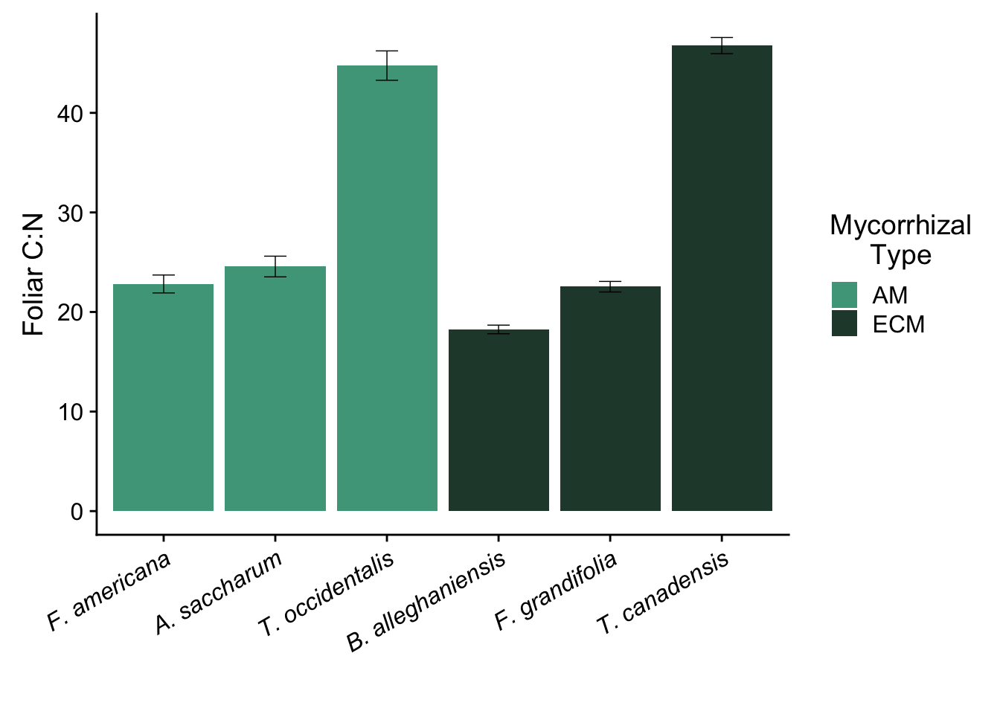
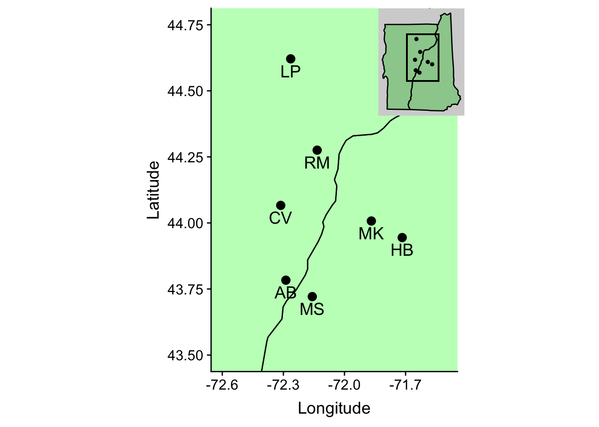
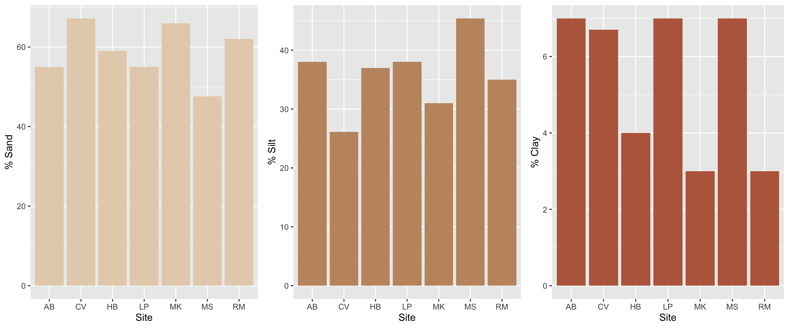
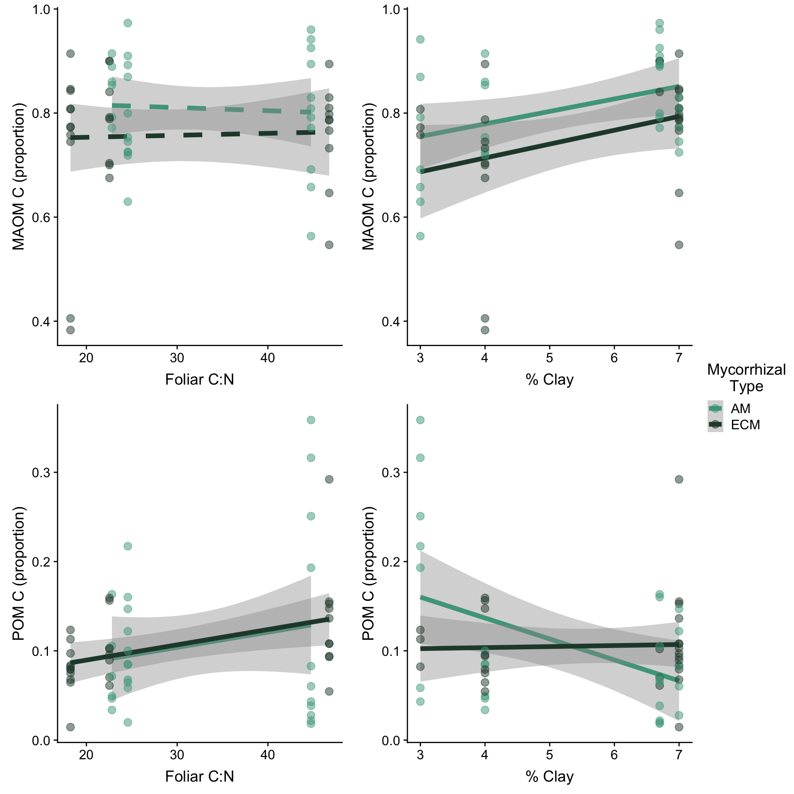
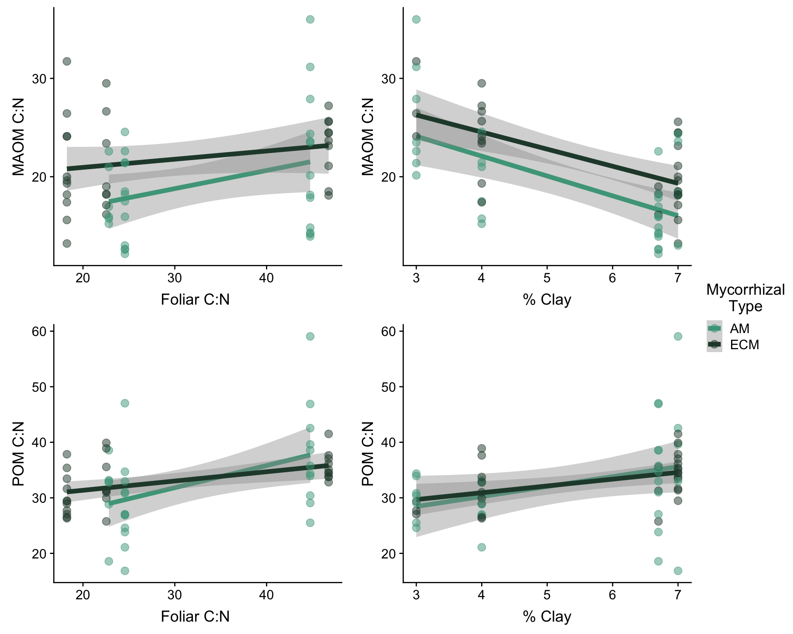

Recent studies indicate that ecosystems dominated by vegetation associated with AM fungi store more soil organic matter (SOM) as mineral-associated organic matter (MAOM) rather than particulate organic matter (POM)
But what are MAOM and POM?
Mineral-associated organic matter (MAOM) is increasingly recognized as a stable and long-term pool of soil carbon and nutrients. Recent work suggests MAOM is primarily of microbial origin, composed of microbial necromass and highly decomposed organic matter residues. These low-molecular weight organic compounds form strong bonds with mineral surfaces, particularly clays and metal oxides. Because these organo-mineral bonds restrict the access of decomposers to MAOM molecules, this material may persist in soil for centuries to millennia. Further, because its long-term stability is based on physical barriers that prevent microbial access rather than energetic constraints on decomposers, MAOM may be less susceptible to decay with increasing soil temperature.
Particulate organic matter (POM) is more or less the “bits” of leaves and roots that remain relatively undecomposed in soil. You can think of POM as organic matter that is not quite done breaking down. Sometimes this decomposition takes a long time, and carbon and nutrients can be stored as POM for years. This is especially true when the chemistry of the original material is complex (in other words, hard for microbes to break apart). Wood, pine needles, thick, waxy leaves, and leaves with a lot of lignin may be considered complex litter material, while thinner, more nitrogen-rich leaves are less complex and easier for microbes to break down.
Based on this information, we may expect litter quality to affect the amount of POM in soil. But things get a little more complicated when we think about the formation of MAOM. Since MAOM is organic matter that has traveled further along in the decomposition process, it is the product of all the microbial activity that modified it in these various stages of decay. In short, the more efficiently the microbial community can decompose organic matter, the more microbial biomass is generated in the soil, and the faster the production of the organic residues and microbial necromass that are the putative precursors of MAOM. Certain microbes are more efficient at decomposition than others, and microbes are all generally more efficient decomposers when the chemistry of the organic matter they are using is less complex. Therefore, MAOM formation depends both on the activity and composition of the microbes conducting decomposition as well as the chemistry of the organic matter available for decomposition.
To recap: MAOM formation is probably affected by… 1. The quality of the litter inputs to the soil
2. The microbial community in the soil
Other controls that are important to consider:
1. Mineral composition of the soil in each site (aka what minerals are available for MAOM to stick to!) 2. Other traits of the trees themselves (root turnover rate, above:belowground biomass, etc)
In this study, we investigated these controls on MAOM content by measuring MAOM and POM content beneath six tree species that vary in litter quality and have different microbes in their rhizospheres. We are using the tree’s mycorrhizal associations as a proxy for the general composition of the microbial communities in the soil.
Tree Species
| Litter Quality | AM | ECM |
|---|---|---|
| High | White Ash | Yellow Birch |
| Medium | Sugar Maple | American Beech |
| Low | Northern White Cedar | Eastern Hemlock |



| Model # | Response Variables | Fixed effects |
|---|---|---|
| 1 | proportion C in MAOM | Mycorrhizal type Foliar C:N Soil%clay |
| 2 | proportion C in POM | Mycorrhizal type Foliar C:N Soil%clay |
| 3 | MAOM C:N | Mycorrhizal type Foliar C:N Soil%clay |
| 4 | POM C:N | Mycorrhizal type Foliar C:N Soil%clay |
Remember: % Clay was determined at the site level; there are 7 distinct sites. Foliar C:N was determined at the species level; there are 6 distinct species.

##
## Call:
## lm(formula = FLF.cn ~ Myc.x + avg_CN + clay, data = myc.maom.cn,
## na.action = na.omit)
##
## Residuals:
## Min 1Q Median 3Q Max
## -16.3127 -2.5627 0.0034 2.6696 21.0746
##
## Coefficients:
## Estimate Std. Error t value Pr(>|t|)
## (Intercept) 17.65330 3.41143 5.175 3.44e-06 ***
## Myc.xECM 0.50906 1.60303 0.318 0.75204
## avg_CN 0.23859 0.06893 3.461 0.00106 **
## clay 1.37934 0.48228 2.860 0.00601 **
## ---
## Signif. codes: 0 '***' 0.001 '**' 0.01 '*' 0.05 '.' 0.1 ' ' 1
##
## Residual standard error: 6.031 on 54 degrees of freedom
## (2 observations deleted due to missingness)
## Multiple R-squared: 0.2903, Adjusted R-squared: 0.2509
## F-statistic: 7.362 on 3 and 54 DF, p-value: 0.0003182